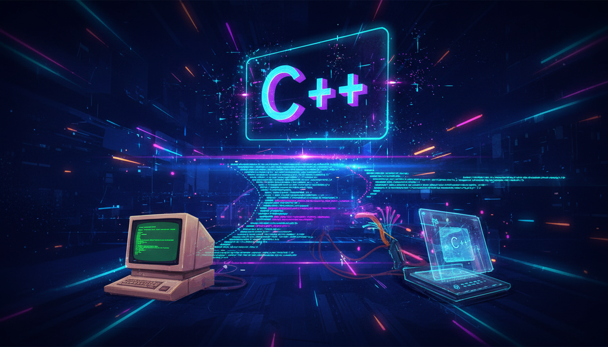

Огляд мови C++, історія розвитку, області застосування та переваги

Рис. 1.1 — Історія та еволюція мови програмування C++
C++ — це потужна, високопродуктивна мова програмування загального призначення, яка була створена Б'ярном Страуструпом на початку 1980-х років як розширення мови C. Назва "C++" символізує інкремент (збільшення на одиницю), що відображає еволюційний характер розвитку мови від C до C++.
C++ підтримує кілька парадигм програмування: процедурну, об'єктно-орієнтовану, узагальнену (шаблонну) та функціональну. Ця універсальність робить C++ однією з найгнучкіших мов програмування у світі.
C++ був створений у 1979 році в Bell Labs. Перша комерційна версія з'явилася у 1985 році. Станом на 2024 рік C++ залишається однією з топ-5 найпопулярніших мов програмування за версією TIOBE Index.
Розвиток мови C++ проходив через кілька ключових етапів:
| Рік | Версія | Основні нововведення |
|---|---|---|
| 1979 | C with Classes | Класи, успадкування, інкапсуляція |
| 1985 | C++ 1.0 | Віртуальні функції, перевантаження операторів |
| 1989 | C++ 2.0 | Множинне успадкування, абстрактні класи |
| 1998 | C++98 | Перший міжнародний стандарт ISO/IEC |
| 2011 | C++11 | Auto, nullptr, лямбда-функції, семантика перенесення |
| 2014 | C++14 | Удосконалення C++11, узагальнені лямбди |
| 2017 | C++17 | Structured bindings, if constexpr, std::optional |
| 2020 | C++20 | Концепти, модулі, корутини, ranges |
C++ використовується практично у всіх сферах розробки програмного забезпечення:
Більшість сучасних ігрових рушіїв (Unreal Engine, Unity нативні компоненти, CryEngine, Godot) написані на C++. Мова забезпечує необхідну продуктивність для реального часу рендерингу та фізичних симуляцій.
Windows, macOS, Linux — всі ці ОС мають значні частини коду написаного на C++. Драйвери пристроїв, ядро системи, низькорівневі компоненти — типові області застосування C++.
Chrome, Firefox, Edge, Safari — рушії всіх сучасних браузерів (Blink, Gecko, WebKit) написані на C++ для максимальної швидкості обробки JavaScript та рендерингу сторінок.
Високочастотний трейдинг, банківські системи, платіжні процесори — C++ забезпечує мікросекундну затримку, критичну для фінансових транзакцій.
C++ використовується у CERN, NASA, у симуляціях клімату, геноміці, обробці зображень у медицині (MRI, CT-сканери).
Мікроконтролери, IoT пристрої, автомобільна електроніка (ECU), авіоніка — C++ дозволяє працювати з обмеженими ресурсами.
Незважаючи на складність, C++ залишається найкращим вибором для завдань, де критичні продуктивність та ефективне використання ресурсів. Вивчення C++ значно покращує розуміння того, як працює комп'ютер "під капотом".
| Критерій | C++ | Python | Java | C# |
|---|---|---|---|---|
| Швидкість виконання | Дуже висока | Низька | Середня | Середня |
| Складність | Висока | Низька | Середня | Середня |
| Керування пам'яттю | Ручне | Автоматичне (GC) | Автоматичне (GC) | Автоматичне (GC) |
| Область застосування | Системне ПЗ, ігри | Data Science, Web | Enterprise, Android | Windows, Unity |
| Компіляція | AOT | JIT/Інтерпретація | Bytecode + JIT | Bytecode + JIT |
| ООП | Підтримується | Підтримується | Обов'язкове | Підтримується |
| Багатопоточність | Нативна | GIL (обмеження) | Вбудована | Вбудована |
Процес перетворення вихідного коду C++ на виконувану програму складається з чотирьох основних етапів:
Препроцесор обробляє директиви (#include, #define, #ifdef тощо). Включає вміст заголовкових файлів, розгортає макроси, виконує умовну компіляцію.
Компілятор перетворює препроцесований код на асемблерний код. Виконується синтаксичний та семантичний аналіз, перевірка типів, оптимізація.
Асемблер перетворює асемблерний код на об'єктні файли (.o або .obj) — машинний код у форматі, що містить символи для лінковки.
Компонувальник (лінкер) об'єднує всі об'єктні файли та бібліотеки в один виконуваний файл. Розв'язує зовнішні посилання, включає статичні бібліотеки, налаштовує динамічне компонування.
// Вихідний код (main.cpp)
#include <iostream>
int main() {
std::cout << "Hello, World!" << std::endl;
return 0;
}
// Етап 1: g++ -E main.cpp > main.ii (препроцесинг)
// Етап 2: g++ -S main.ii (компіляція → main.s)
// Етап 3: g++ -c main.s (асемблювання → main.o)
// Етап 4: g++ main.o -o program (лінковка → program.exe)Перш ніж перейти до наступної лекції, де ми детально розглянемо структуру програми, давайте подивимося на найпростіший приклад:
#include <iostream>
int main() {
// Це коментар — він ігнорується компілятором
std::cout << "Привіт, світ!" << std::endl;
return 0;
}Давайте розберемо цей код:
У цій вступній лекції ми розглянули:
Рекомендуємо прочитати книгу Б'ярна Страуструпа "Програмування на C++: принципи та практика" та відвідати сайт cppreference.com — найавторитетніший довідник з C++.